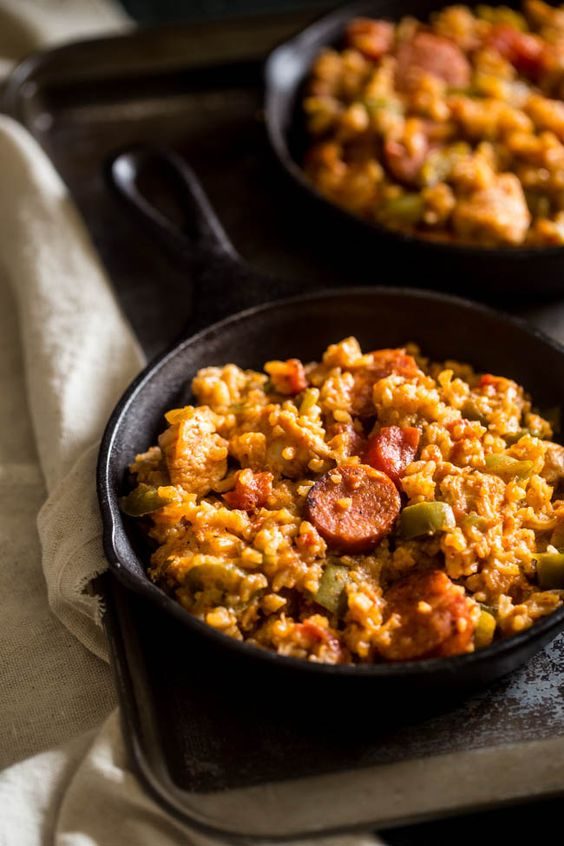
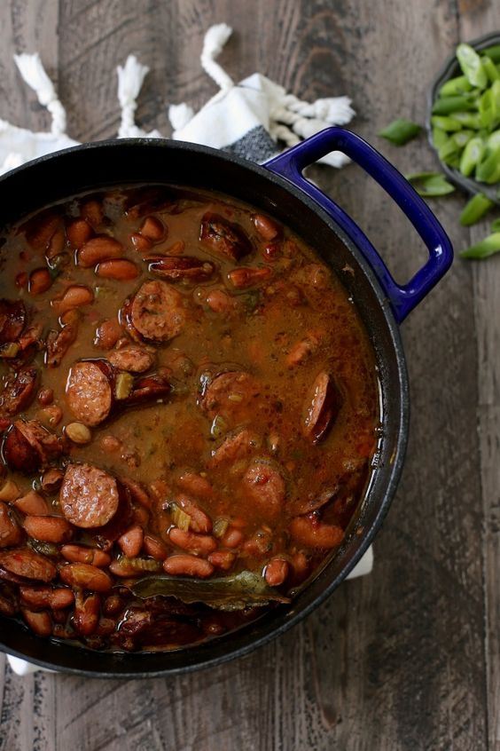

Cajun Recipes

Original image from The woks of life.
Jambalaya
- 4 whole bay leaves
- 1 teaspoon salt
- 1 teaspoon white pepper
- 1 teaspoon dry mustard
- 1 teaspoon ground red pepper
- 1 teaspoon gumbo file
- 1/2 teaspoon ground cumin
- 1/2 teaspoon black pepper
- 4 tablespoons margarine
- 6 ounces ham
- 6 ounces andouille
- 1 1/2 cup chopped onions
- 1 1/2 cup chopped celery
- 1 cup green bell pepper
- 1 1/2 teaspoon minced garlic
- 2 cups uncooked rice
- 4 cups chicken stock

Original image from Joy the Baker.
Red Beans and Rice
- 1/2 pound dry kidney beans
- water to cover the beans
- 3 pounds small ham hocks
- 1 1/4 cup finely chopped celery
- 1 cup finely chopped onion
- 1 cup finely chopped green bell perpper
- 3 bay leaves
- 1 1/2 teaspoon tabasco sauce
- 1 teaspoon white pepper
- 1 teaspoon dried thyme leaves
- 3/4 teaspoon garlic powder
- 3/4 teaspoondried oregano leaves
- 1/2 teaspoon ground red pepper
- 1/4 teaspoon black pepper